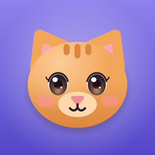

Snuggle Pets
A virtual pet for kids 4–8. Feed it, bathe it, dress it up and decorate its house. It grows up with every day of care and never runs away.
No ads. No coins. One-time unlock. Your pet never dies.
Support
Questions, ideas or something not working? Email shchukavlad4@gmail.com. We usually answer within two days.
Common questions
Can the pet die or run away?
No. If nobody visits for a while, the pet gets hungry and a bit sleepy and waits. One or two caring actions make it happy again.
Why is my child's pet asleep?
Pets go to bed at the bedtime set in the grown-ups section (8 pm by default) and wake up in the morning. Change it under the gear icon after the grown-ups question.
How do I get to the settings?
Tap the small gear in the top corner and answer the question for grown-ups.
What does the full version include?
All five pets, every outfit, all houses and decorations, and everything added in future updates. It is a one-time purchase, shared with your family through Family Sharing.
I bought it on another device.
Open the grown-ups section and tap Restore Purchases.